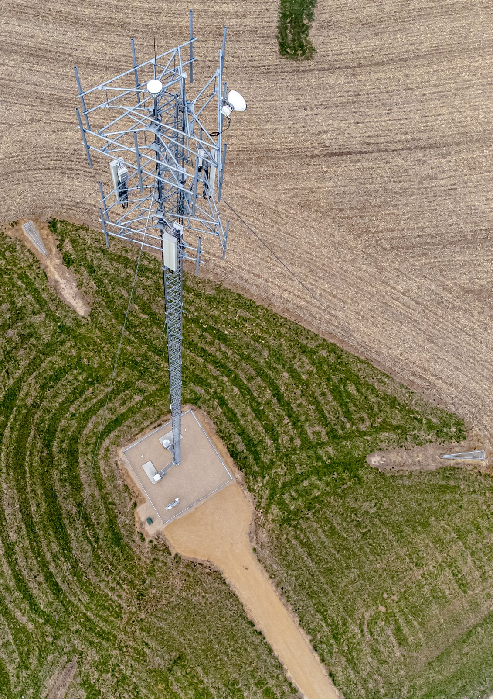
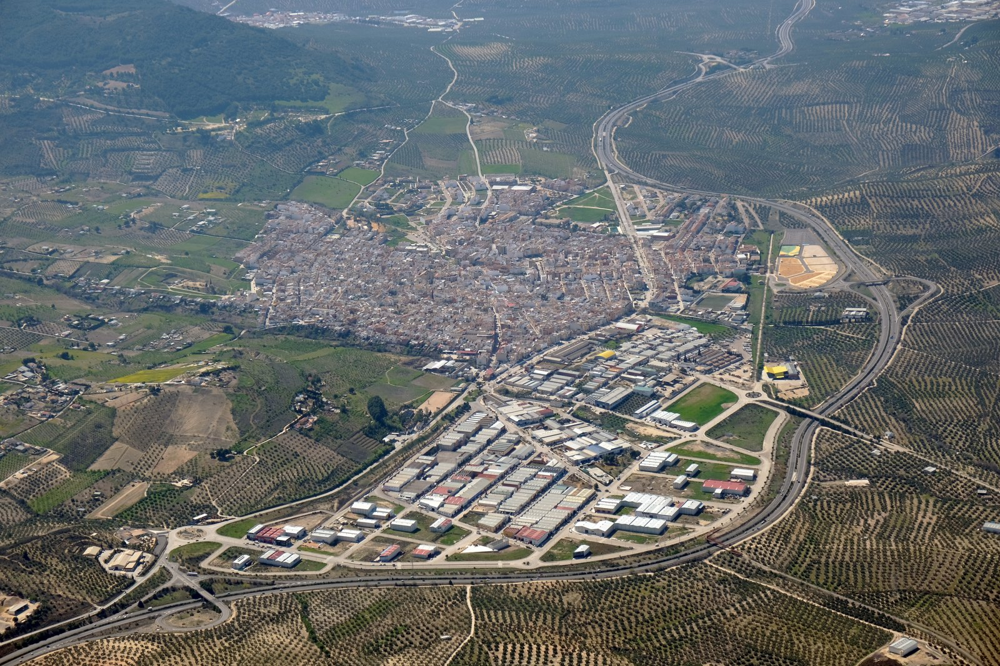
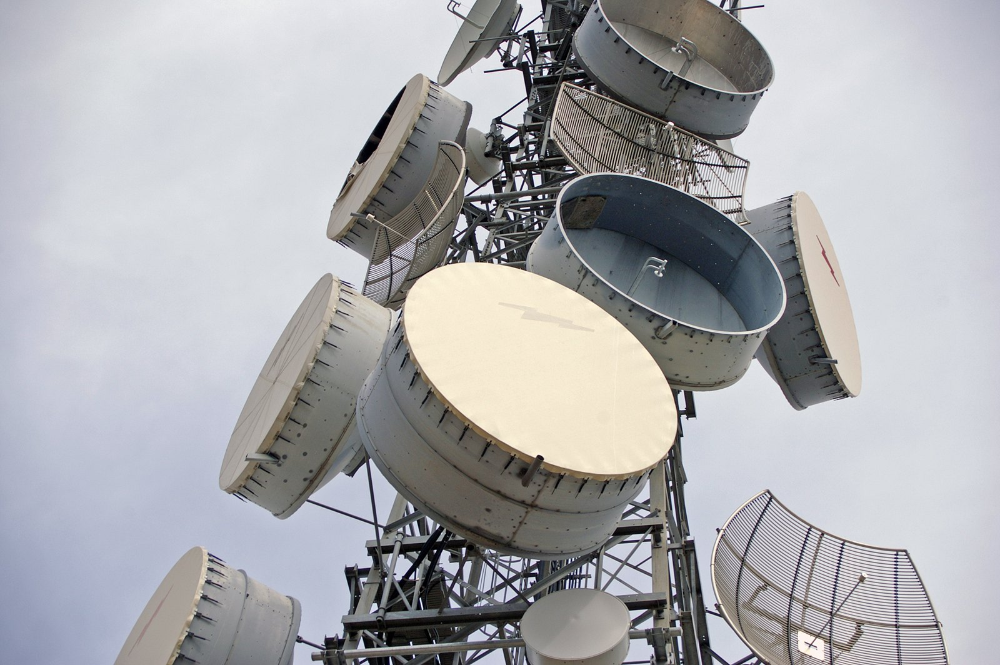

INSPECCIÓN TÉCNICA · FOTOGRAMETRÍA
Otra perspectiva.
Mejores decisiones.
Transformamos imágenes aéreas en información útil para tus proyectos.
Descubre el detalle de tus estructuras y una nueva forma de conocer tu entorno. Inspección técnica y fotogrametría con drones, desde la captura hasta el resultado.

DOS FORMAS DE VER MÁS ALLÁ
El detalle de una torre.
La dimensión de un terreno.
Dos servicios, un mismo objetivo: acercarte a la información que necesitas para avanzar.

01 / INSPECCIÓNInspección técnica
Torres de telecomunicaciones y estructuras, vistas con el detalle que necesita tu equipo.
Descubre la inspección técnica
02 / FOTOGRAMETRÍAFotogrametría
Del terreno a la información espacial: ortofotos, nubes de puntos y modelos 3D.
Descubre la fotogrametríaACERCAMOS LO QUE PARECE LEJANO
Una perspectiva que
cambia lo que puedes ver.
Del conjunto al detalle. De una imagen a una nueva forma de comprender tu infraestructura.

DRONTEC + INTELSI
Visión aérea.
Experiencia técnica.
Drontec es la división de drones de Intelsi Telecomunicaciones.
Conectamos la captura aérea con el trabajo técnico: inspeccionar estructuras, documentar infraestructuras y convertir fotografías en información espacial.
Desde Rellinars, Barcelona, estudiamos cada proyecto para definir qué necesitas ver y qué necesitas obtener.
Conoce IntelsiHABLEMOS DE TU PROYECTO
Tu próximo proyecto,
desde otra perspectiva.
Cuéntanos qué necesitas inspeccionar o digitalizar.
Te ayudamos a definir la captura y los resultados.